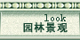
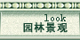

 |

小区向左：武商量贩、美联超市、鼓楼商场 小区向左：四中、五中、中心医院 小区向左：1、6、8、14、24、28、536、537 |
 |
|
1路 火车站――岘山 火车站 消防支队 人民广场（银辉金行） 解放桥 樊城桥头 襄阳桥头 东门口 东街（市中心医院） 十字街（长久律师事务所） 文博馆 南湖广场 胜利街 落轿街（仪表元件厂） 岘山（省自动化学校） 6路 人民广场――卧龙镇 人民广场（解放桥） 樊城桥头 襄阳桥头 东街 十字街 西门 公交三公司 檀溪中路（金都大酒店） 汉丹路口 檀溪乡 万山工业区 万山 千山（安定医院） 贾洲 花梨木店 张湾 广德寺 刘营 国道路口 隆中街口 街东路口 荣建路口 中街 江山大道 卧龙镇 8路 人民广场――尹集 人民广场（解放桥） 樊城桥头 襄阳桥头 十字街 西 门 公交三公司 檀溪中路（金都大酒店） 物价局 虎头山 营盘村 麒麟店 劳教所 车管所 关路口 白庙 尹集 14路：东风汽车电气公司------火车站 东风汽车电气公司 环山路 烈士陵园 临时站 西巷口 胜利街 南湖广场 文博馆 十字街（长久律师事务所） 东街 襄阳桥头 十字路（市一医院） 朝阳路 前进路口 建华路口（樊城四七七医院） 交警支队 新华路（返回时有） 火车站 |
| Top |